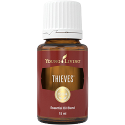
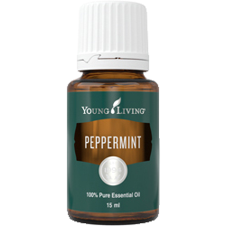
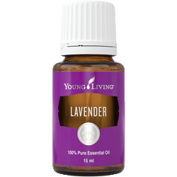
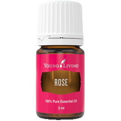
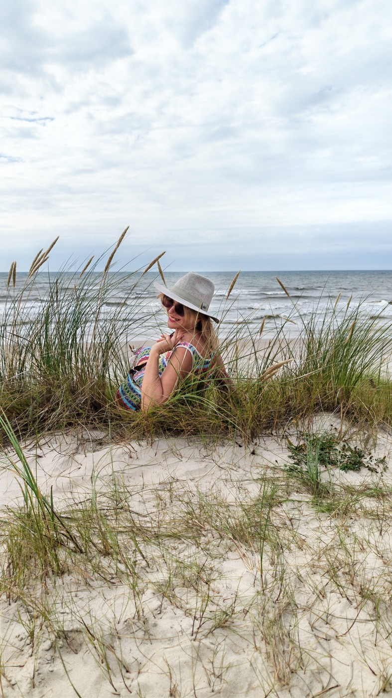
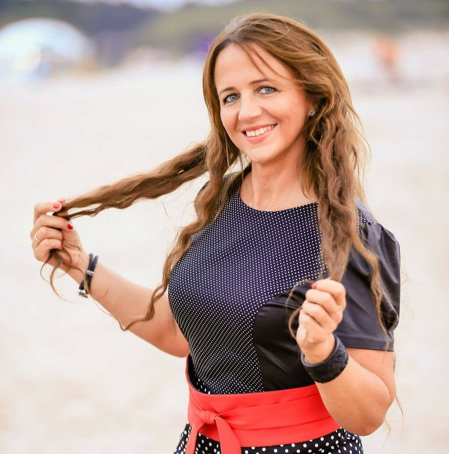

Thieves
mišinys
Šiltas, prieskoninis kvapas, lyg ką tik būtų iškeptas pyragas su gvazdikėliais ir cinamonu.
Kada: rudenį ir žiemą, kai norisi jaukesnių namų, arba po tvarkymosi.
Kaip kasdien naudoti eterinius aliejus ir kaip juos užsisakyti pačiam, kai baigiasi.
Aliejus patiko, naudojai, o kai baigėsi, naujas taip ir neatsirado.
Ne todėl, kad nebereikia. Tiesiog pamiršti arba nežinai, kaip užsisakyti be susitikimo. Čia rasi, kaip naudoti tai, ką jau turi, ką imti toliau ir kaip užsisakyti pačiam, kada tau patogu.
Šituos keturis dažniausiai siūlau tiems, kas tik pradeda. Jų užtenka namų kvapui, vakaro ramybei ir mažiems savo ritualams.

Šiltas, prieskoninis kvapas, lyg ką tik būtų iškeptas pyragas su gvazdikėliais ir cinamonu.
Kada: rudenį ir žiemą, kai norisi jaukesnių namų, arba po tvarkymosi.

Gaivus, vėsus kvapas. Pabunda ir kambarys, ir tas, kas jame sėdi.
Kada: ryte arba darbo kampe, kai reikia susikaupti. Stiprus, užtenka kelių lašų.

Minkštas, ramus kvapas. Tas, nuo kurio dažniausiai ir pradedama.
Kada: vakare, kai dienos triukšmas baigiasi. Difuzorių išjunk prieš miegą.

Sodrus, gilus kvapas. Brangiausias iš šitų keturių, todėl naudojamas po lašą.
Kada: ypatingam vakarui ar savo ramybės minutei, kai nori sau ko nors gero.
Tiek lašų difuzoriuje pradžiai. Young Living garintuvams rašo 8-10 lašų, bet tai riba, ne pradžia.
Tiek per dieną garink naują aliejų, ilgink pamažu. Per naktį nepalik.
Gyvūnas turi galėti išeiti iš kambario. Prie mažo vaiko lovos difuzoriaus nejunk.

Raindrop yra būdas, kai aliejai po lašą lašinami išilgai nugaros ir švelniai paskirstomi pirštų galais. Jį namuose daro vienas šeimos narys kitam. Ramiai, be skubėjimo, vakarą, kai niekur nereikia bėgti.
Tam nereikia jokio specialaus pasiruošimo ar kelionės pas ką nors. Reikia rinkinio ir pusvalandžio laiko vienas kitam.
Young Living turi atskirą Raindrop rinkinį, jame visi reikalingi aliejai. Kai kurie iš jų stiprūs, todėl prieš pirmą kartą perskaityk rinkinio aprašymą ir atsargumo nurodymus. Rinkinį rasi Young Living puslapyje per mano nuorodą.
Tai naujiena ir man pačiai. Dar neišbandžiau, todėl rašau tik tai, ką apie juos sako pats gamintojas.
Pelargonija ir rožė su vetiveriu.
Muskatas ir osmantas su tonka ir gvajako mediena.
Abu kartu parduodami rinkinyje His & Hers.
Ankstesnė kolekcija: Sweet Decadence (šilti kepiniai ir riešutai), Smokey Ember (mediena ir saulės įkaitinti kraštovaizdžiai) ir Cashmere Creme (vanilė, plakta vyšnia ir sandalmedis). Visus kvepalus rasi wyldnotes.com.
Man nereikia skambinti ir nereikia susitikti. Užsisakai pats, kada tau patogu, o siuntinys atkeliauja tiesiai į namus.
Užsisakai, ko reikia, ir tuo baigi. Privalomos sumos nėra, gali užsisakyti ir kartą per metus.
Užsakai reguliariai, ir siuntinys kas mėnesį ateina pats, tad pamiršti nebeįmanoma. Tam reikia bent 50 PV per mėnesį, o kuo daugiau PV, tuo didesnė grąža.
Jei dar nežinai, ką imti, pradėk nuo vieno aliejaus iš keturių aukščiau.
Į Young Living
Aš paaiškinu, kaip aliejus naudoti namuose, ir padedu išsirinkti, nuo ko pradėti. Užsakai pats, per mano nuorodą, kada tau patogu.
Nežinai, kurį imti? Parašyk man Facebook. Paklausiu trijų dalykų ir pasakysiu vieną pavadinimą. Jei pasirodys, kad tau šito nereikia, taip ir pasakysiu.